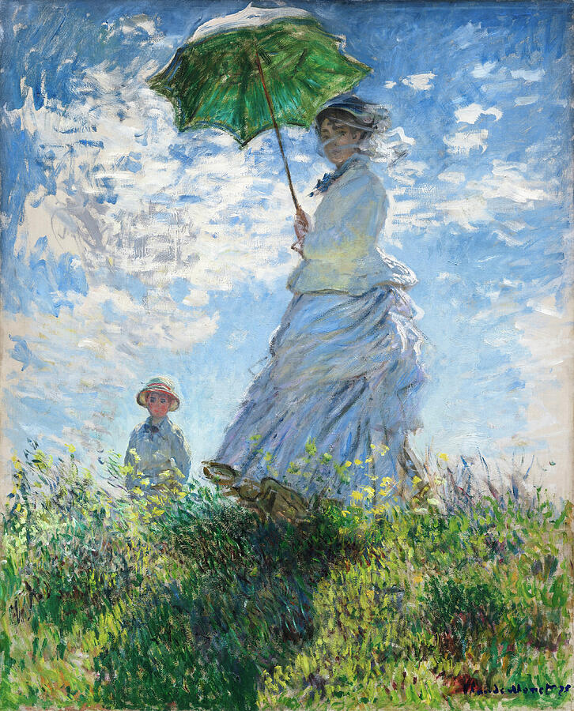
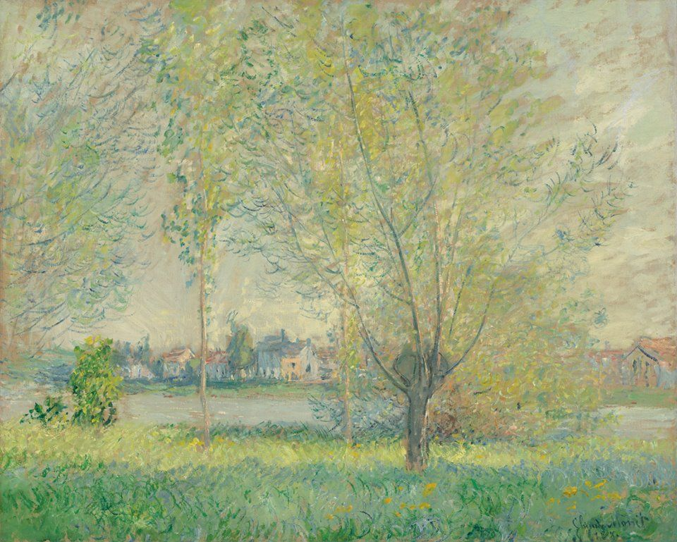

The Japanese Footbridge
Claude Monet, 1899
Born in Paris, the son of a grocer, Monet grew up in Le Havre. Contact with Eugène Boudin in about 1856 introduced Monet to painting from nature. He was in Paris in 1859 and three years later he entered the studio of Charles Gleyre, where he met Pierre-Auguste Renoir, Alfred Sisley and Frédéric Bazille. Edouard Manet was an influence on his figure compositions of the 1860s, while the informal style of his later landscapes originated in works such as 'Bathers at La Grenouillère', painted in 1869 when Monet worked with Renoir at Bougival.Monet was the leading French Impressionist landscape painter. Like Camille Pissarro and Charles-François Daubigny, Monet moved to London during the Franco-Prussian war (1870-1). After his return to France he lived at Argenteuil (1871-8). He exhibited in most of the Impressionist exhibitions, beginning in 1874, where the title of one of his paintings led to the naming of the movement. A period of travel followed in the 1880s, and in 1883 he acquired a property at Giverny, north-west of Paris. Thereafter Monet concentrated on the production of the famous series showing a single subject in different lighting conditions, including poplars, haystacks, Rouen Cathedral, and his own garden at Giverny.
Claude Monet, 1899

Claude Monet, 1899

Claude Monet, 1880